11. PostgreSQL 9.4
Passamos agora à adaptação para a versão PostgreSQL 9.4 do que foi feito com o Oracle.
 |
11.1. Configuração do ambiente de trabalho
11.1.1. Ambiente Eclipse
Iremos trabalhar com o seguinte ambiente Eclipse:
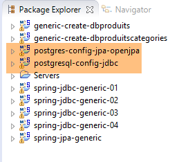 |
Os projetos PostgreSQL acima referidos encontram-se na pasta [<exemples>/spring-database-config\postgresql\eclipse].
Nota: execute o comando [Alt-F5] para regenerar todos os projetos Maven.
11.1.2. Geração das bases de dados
A partir daqui, a ligação às bases de dados PostgresSQL é feita com as credenciais [postgres / postgres]. Inicie o PostgreSQL e o seu cliente [PgManager] (ver parágrafo 23.7).
 | 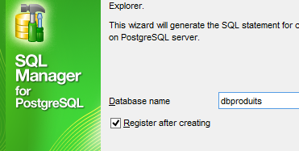 |
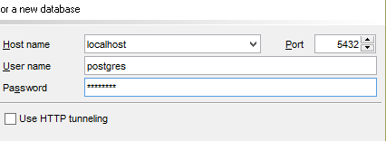 | 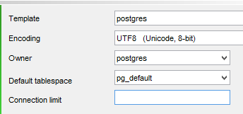 |
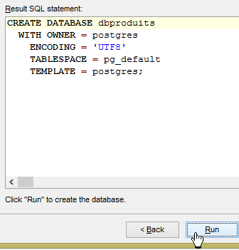 | 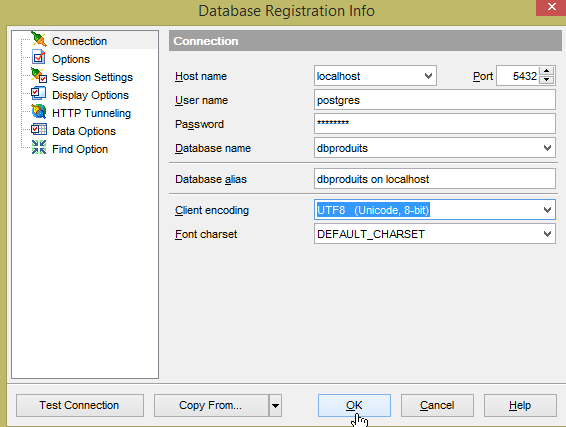 |
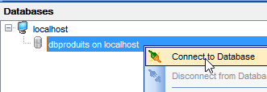 | 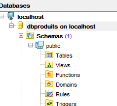 | 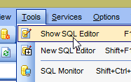 |
 |
- no [1], será carregado o script SQL [<exemples>\spring-database-config\postgresql\databases\dbproduits.sql];
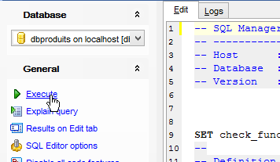 |  |
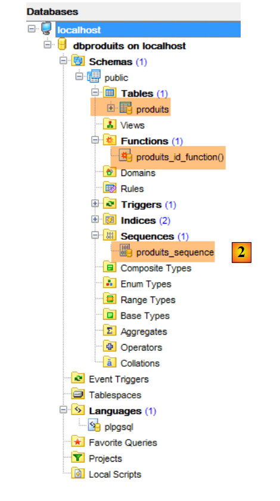 |
- no [2]; tal como no Oracle, as camadas JPA utilizam sequências para gerar as chaves primárias. Aqui, a sequência [produits_sequence] gera as chaves primárias da tabela [produits];
Agora, execute as configurações:
- [spring-jdbc-generic-01.IntroJdbc01];
- [spring-jdbc-generic-01.IntroJdbc02];
- [spring-jdbc-generic-03.JUnitTestDao1];
- [spring-jdbc-generic-03.JUnitTestDao2];
Todas elas devem ser bem-sucedidas.
Vamos agora gerar a base [dbproduitscategories]. Repita para [dbproduitscategories] o procedimento seguido para criar [dbproduits]. O script SQL a carregar encontra-se na localização [<exemples>\spring-database-config\postgresql\databases\ dbproduitscategories.sql];
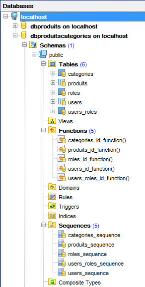 |
Agora, execute as configurações:
- [spring-jdbc-generic-04.JUnitTestDao];
- [spring-jpa-generic-JUnitTestDao-openjpa];
Ambas devem ser bem-sucedidas.
11.2. Configuração da camada JDBC
 |  |
O projeto [postgresql-config-jdbc] configura a camada [JDBC] da seguinte arquitetura de testes:
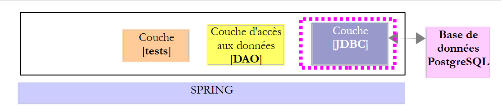 |
O projeto é análogo ao projeto de configuração [mysql-config-jdbc] da camada JDBC do SGBD MySQL (ver parágrafo 3.3). Apresentamos apenas as alterações:
O ficheiro [pom.xml] importa o controlador JDBC de PostgreSQL:
<project xmlns="http://maven.apache.org/POM/4.0.0" xmlns:xsi="http://www.w3.org/2001/XMLSchema-instance"
xsi:schemaLocation="http://maven.apache.org/POM/4.0.0 http://maven.apache.org/xsd/maven-4.0.0.xsd">
<modelVersion>4.0.0</modelVersion>
<groupId>dvp.spring.database</groupId>
<artifactId>generic-config-jdbc</artifactId>
<version>0.0.1-SNAPSHOT</version>
<name>configuration generic jdbc</name>
<parent>
<groupId>org.springframework.boot</groupId>
<artifactId>spring-boot-starter-parent</artifactId>
<version>1.2.3.RELEASE</version>
</parent>
<dependencies>
<!-- dependências variáveis ********************************************** -->
<!-- controlador JDBC do SGBD -->
<dependency>
<groupId>postgresql</groupId>
<artifactId>postgresql</artifactId>
<version>9.1-901-1.jdbc4</version>
</dependency>
<!-- dependências constantes ********************************************** -->
...
</dependencies>
...
</project>
- linhas 18-22: o controlador JDBC a partir de PostgreSQL;
A segunda alteração encontra-se na classe [ConfigJdbc], que define os identificadores de acesso às bases de dados:
// parâmetros de ligação
public final static String DRIVER_CLASSNAME = "org.postgresql.Driver";
public final static String URL_DBPRODUITS = "jdbc:postgresql:dbproduits";
public final static String USER_DBPRODUITS = "postgres";
public final static String PASSWD_DBPRODUITS = "postgres";
public final static String URL_DBPRODUITSCATEGORIES = "jdbc:postgresql:dbproduitscategories";
public final static String USER_DBPRODUITSCATEGORIES = "postgres";
public final static String PASSWD_DBPRODUITSCATEGORIES = "postgres";
A terceira alteração que pode ser efetuada diz respeito ao número máximo de parâmetros que um [PreparedStatement] pode suportar:
// número máximo de parâmetros de um [PreparedStatement]
public final static int MAX_PREPAREDSTATEMENT_PARAMETERS = 10000;
O teste [JUnitTestPushTheLimits] gera ordens SQL para 5000 produtos, que, por sua vez, irão gerar [PreparedStatement] com 5000 parâmetros. O MySQL suportou este valor. O PostgreSQL também.
A quarta alteração é mais surpreendente:
public final static String TAB_PRODUITS_ID = "id";
public final static String TAB_CATEGORIES_ID = "id";
Os nomes das colunas [ID] das tabelas [CATEGORIES] e [PRODUITS] têm de estar em minúsculas para o projeto [spring-jdbc-04]. Caso contrário, ocorre uma falha nas instruções que utilizam os dois beans seguintes deste projeto:
// inserção de produto
@Bean
public SimpleJdbcInsert simpleJdbcInsertProduit(DataSource dataSource) {
return new SimpleJdbcInsert(dataSource)
.withTableName(ConfigJdbc.TAB_PRODUITS)
.usingGeneratedKeyColumns(ConfigJdbc.TAB_PRODUITS_ID)
.usingColumns(ConfigJdbc.TAB_PRODUITS_NOM, ConfigJdbc.TAB_PRODUITS_PRIX, ConfigJdbc.TAB_PRODUITS_DESCRIPTION,
ConfigJdbc.TAB_PRODUITS_CATEGORIE_ID);
}
// inserção de categoria
@Bean
public SimpleJdbcInsert simpleJdbcInsertCategorie(DataSource dataSource) {
return new SimpleJdbcInsert(dataSource).withTableName(ConfigJdbc.TAB_CATEGORIES)
.usingGeneratedKeyColumns(ConfigJdbc.TAB_CATEGORIES_ID)
.usingColumns(ConfigJdbc.TAB_CATEGORIES_NOM);
}
11.3. Configuração da camada JPA OpenJpa
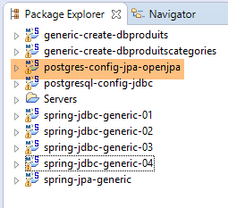 | 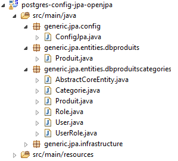 |
O projeto [postgresql-config-jpa-openjpa] configura a camada [JPA] da arquitetura de testes:
 |
O projeto é análogo ao projeto de configuração [oracle-config-jpa-openjpa] da camada JPA OpenJpa do SGBD Oracle (ver parágrafo 10.5). Com efeito, ambos os SGBD utilizam sequências para gerar as chaves primárias. Há apenas uma alteração a efetuar. Esta encontra-se na definição do bean [jpaVendorAdapter] da classe [ConfigJpa]:
// o provedor JPA
@Bean
public JpaVendorAdapter jpaVendorAdapter() {
OpenJpaVendorAdapter openJpaVendorAdapter = new OpenJpaVendorAdapter();
openJpaVendorAdapter.setShowSql(false);
openJpaVendorAdapter.setDatabase(Database.POSTGRESQL);
openJpaVendorAdapter.setGenerateDdl(true);
return openJpaVendorAdapter;
}
- linha 6: indica-se à implementação JPA que irá trabalhar com uma base de dados PostgreSQL. A implementação JPA irá então adotar tanto os tipos de dados proprietários como o SQL, que é o proprietário deste SGBD.
Após estas alterações, a execução da configuração [spring-jpa-generic-JUnitTestDao-openjpa] deverá ser bem-sucedida.
 |  |
11.4. Configuração da camada JPA do Hibernate
 |  |
Nota: execute o comando [Alt-F5] para regenerar todos os projetos Maven.
O projeto [postgresql-config-jpa-hibernate] é semelhante ao projeto [oracle-config-jpa-hibernate] (parágrafo 10.4), com as mesmas alterações que estiveram na base da migração do [oracle-config-jpa-openjpa] para o projeto [postgresql-config-jpa-openjpa] (parágrafo 11.3).
Após estas alterações, a execução da configuração [spring-jpa-generic-JUnitTestDao-hibernate-eclipselink] deverá ser bem-sucedida.
11.5. Configuração da camada JPA EclipseLink
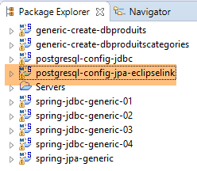 |  |
Nota: execute o [Alt-F5] para regenerar todos os projetos Maven.
O projeto [postgresql-config-jpa-eclipselink] é análogo ao projeto [oracle-config-jpa-eclipselink] (parágrafo 10.3) com as mesmas alterações que estiveram na base da migração do [oracle-config-jpa-openjpa] para o projeto [postgresql-config-jpa-openjpa] (parágrafo 11.3).
Após estas alterações, a execução da configuração [spring-jpa-generic-JUnitTestDao-hibernate-eclipselink] deverá ser bem-sucedida.